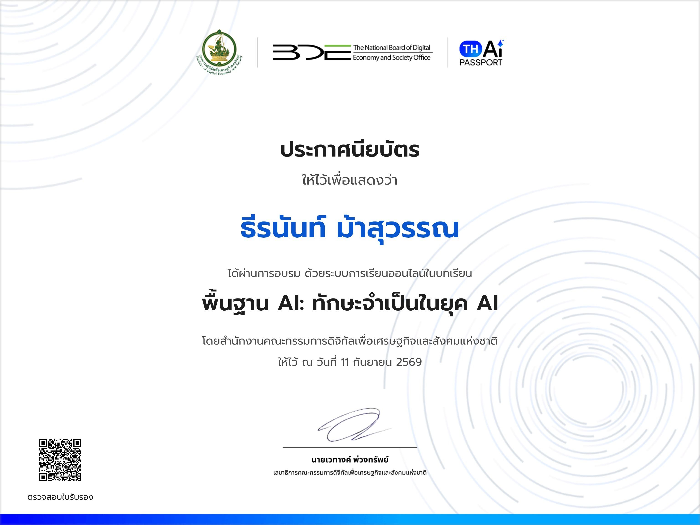
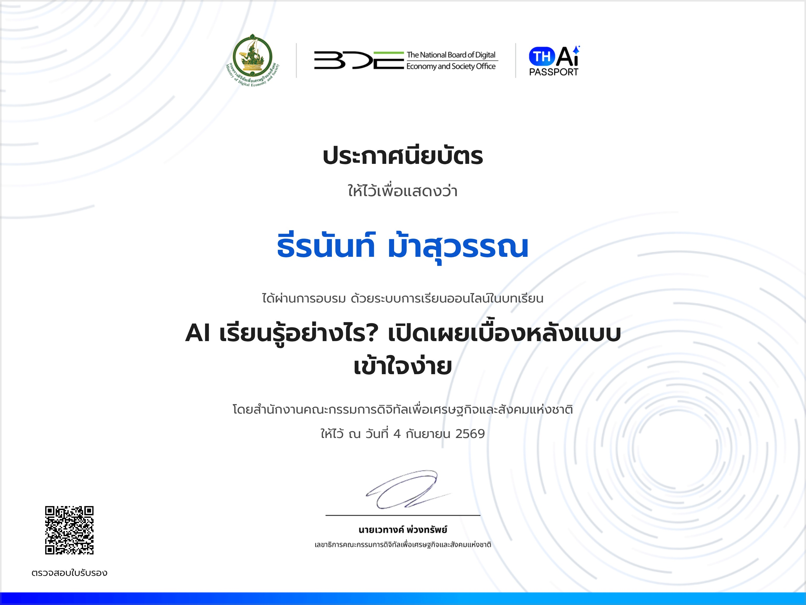
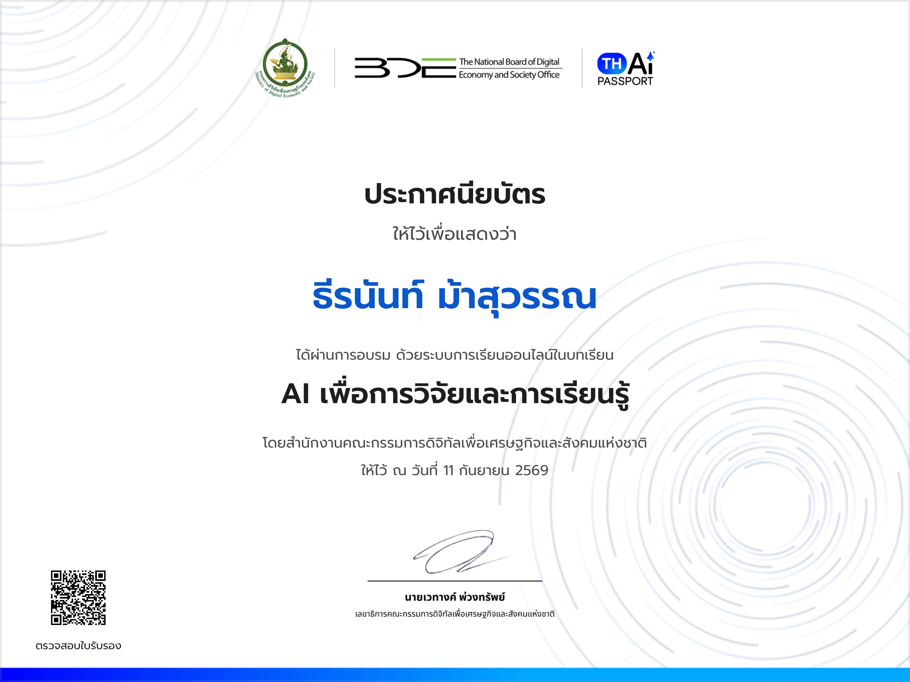
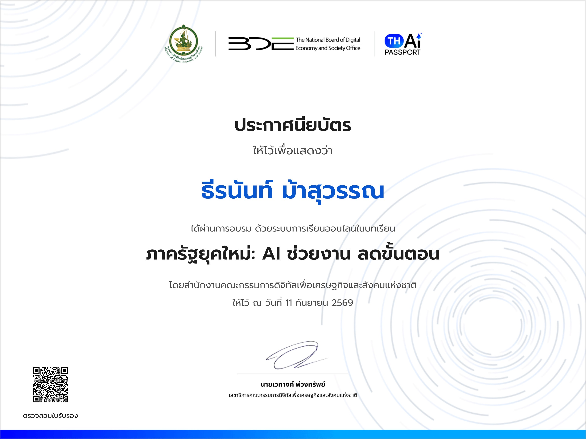
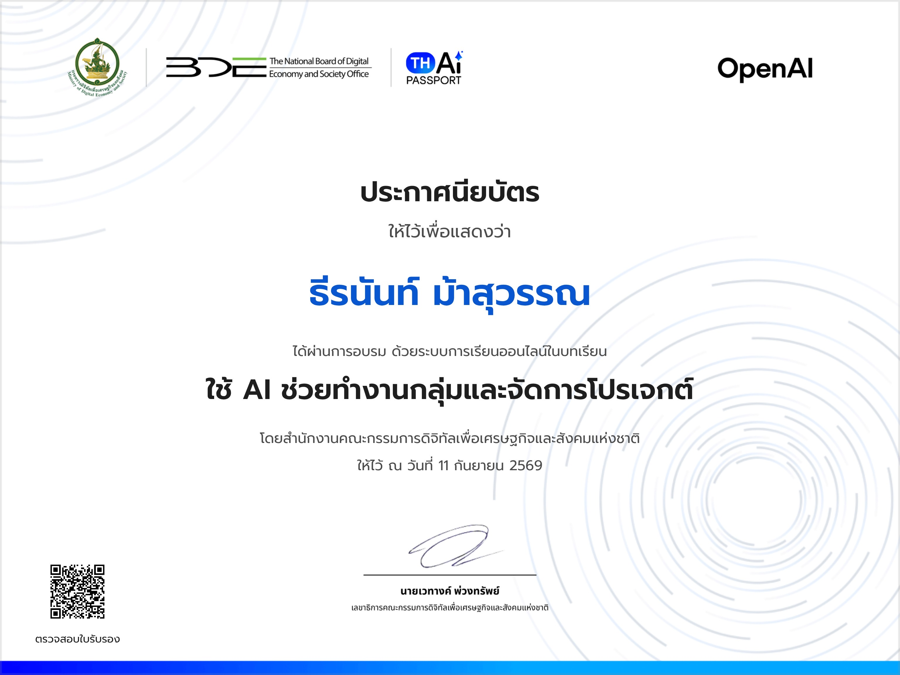

คลังรวมผลงานเว็บไซต์ (Project Collection)
คลิกที่ปุ่มเพื่อเข้าชมเว็บไซต์และระบบงานจริงแต่ละชิ้น
- CRAFT YOUR TASTE -
สัมผัสสุนทรียภาพแห่งการดื่มเบียร์ เว็บไซต์นำเสนอเรื่องราว ศิลปะการหมัก และรสชาติอันเป็นเอกลักษณ์ของคราฟต์เบียร์
Portfolio Site
แฟ้มสะสมผลงานส่วนตัว รวบรวมประวัติ ผลงานโดดเด่น และสรุปภาพรวมการเรียนรู้ตลอดหลักสูตร
BMI Calculator
เว็บแอปพลิเคชันคำนวณดัชนีมวลกาย ประมวลผลค่าสุขภาพและประเมินเกณฑ์สุขภาพแบบเรียลไทม์
Open House Project
เว็บไซต์ประชาสัมพันธ์กิจกรรม Open House นำเสนอไฮไลต์สาขาวิชาและข้อมูลการเปิดรับสมัคร
Web Game Project
มินิเกมบนเว็บไซต์ พัฒนาโดยเน้นตรรกะการควบคุม JavaScript และการตอบสนองผู้เล่นแบบ Interactive
Web ร้านอาหาร
เว็บไซต์นำเสนอร้านอาหาร ดีไซน์เมนูแนะนำ บรรยากาศร้าน และการบริการลูกค้าอย่างเป็นเอกลักษณ์
Animate Slider Gallery
แกลเลอรีภาพเคลื่อนไหวแบบสไลเดอร์ โดดเด่นด้วยการสลับรูปภาพและเอฟเฟกต์แอนิเมชันสุดทันสมัย
ใบประกาศนียบัตรการอบรม (AI Certificates)
ผ่านการอบรมหลักสูตรปัญญาประดิษฐ์ (AI) โดยสำนักงานคณะกรรมการดิจิทัลเพื่อเศรษฐกิจและสังคมแห่งชาติ (สดช.)

พื้นฐาน AI: ทักษะจำเป็นในยุค AI
เข้าใจภาพรวม เทคโนโลยี และทักษะปัญญาประดิษฐ์ที่จำเป็นในยุคดิจิทัล
อนุมัติเมื่อ: 11 กันยายน 2569

AI เรียนรู้อย่างไร? เปิดเผยเบื้องหลังแบบเข้าใจง่าย
เรียนรู้กลไกการฝึกฝนและประมวลผลข้อมูลเบื้องหลัง Machine Learning
อนุมัติเมื่อ: 4 กันยายน 2569

AI เพื่อการวิจัยและการเรียนรู้
การนำ AI มาประยุกต์ใช้ในการสืบค้นข้อมูล วิเคราะห์งานวิจัย และเพิ่มประสิทธิภาพการศึกษา
อนุมัติเมื่อ: 11 กันยายน 2569

ภาครัฐยุคใหม่: AI ช่วยงาน ลดขั้นตอน
การประยุกต์ใช้ AI ในการดำเนินงานภาครัฐ เพื่อเพิ่มความรวดเร็วและลดขั้นตอนการทำงาน
อนุมัติเมื่อ: 11 กันยายน 2569

ใช้ AI ช่วยทำงานกลุ่มและจัดการโปรเจกต์
เทคนิคการใช้ AI ในการทำงานร่วมกัน การวางแผน และบริหารจัดการโปรเจกต์อย่างมีประสิทธิภาพ
อนุมัติเมื่อ: 11 กันยายน 2569